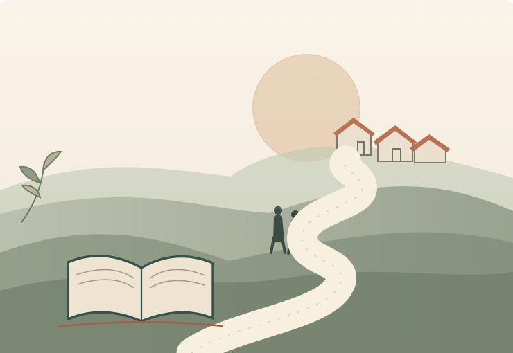

پایان معرفی
نقشهای که با هم کاملش میکنیم
از اطلاعات تا جامعه
از یک سؤال ساده شروع میکنیم؛ بعد با هم مسیر فکر و تصمیم را باز میکنیم.

یک سؤال، چند مسیر، گفتوگوی مشترک
نوشتههای منتشرشده
از کجا شروع کنیم؟
هر نوشته تاریخ خودش را دارد. هر کجا دوست داشتی وارد مسیر شو.
هر قسمت بخشی از نقشه را روشنتر میکند. ادامه این مسیر هم بهمرور منتشر میشود.
معرفی مجموعه00 /
پوستر اصلی
برای دیدن تصویر کامل، انتخاب کنید
از اطلاعات تا جامعه / معرفی
نقشه مسیر
فهرست نوشتهها
هر نوشته یک مسیر مستقل است. معرفی همیشه در دسترس میماند.